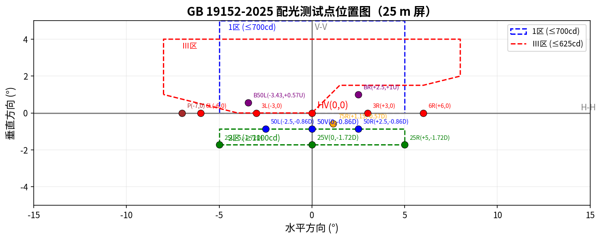
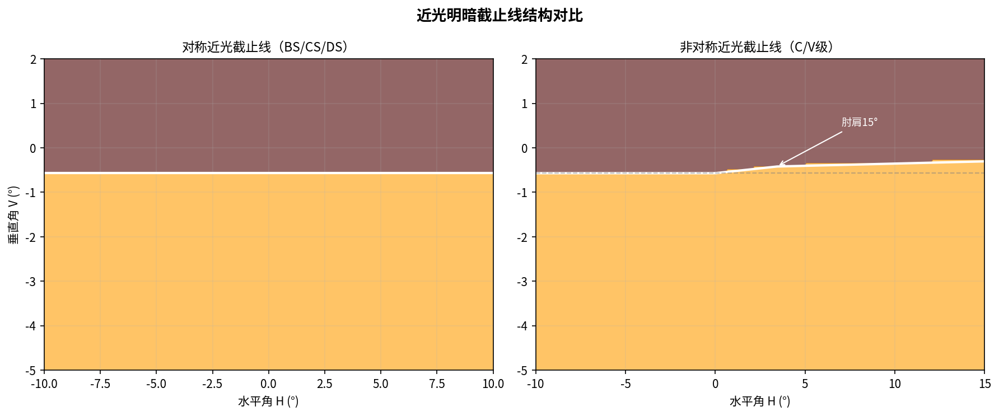
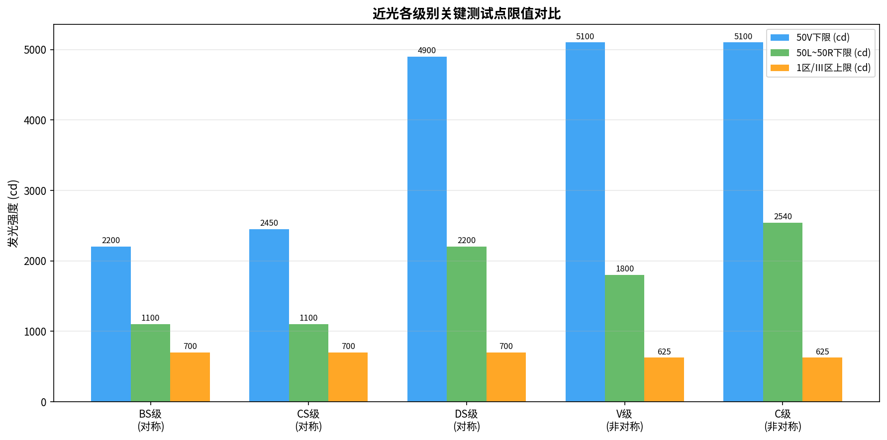
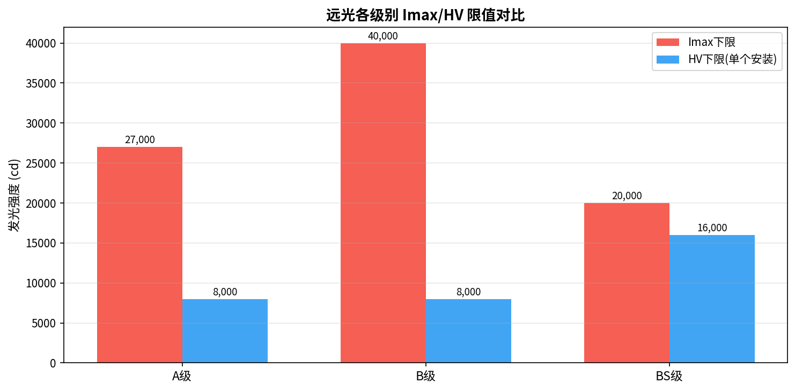
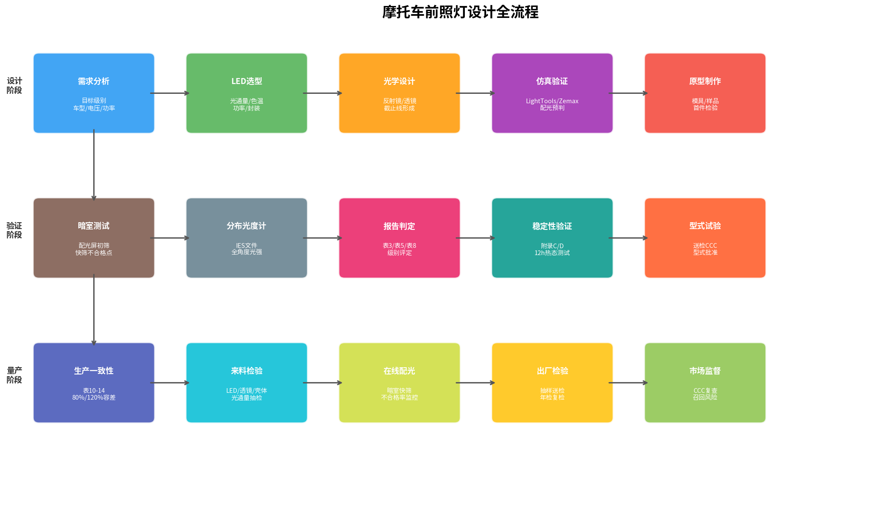
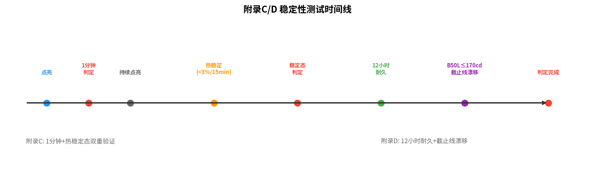
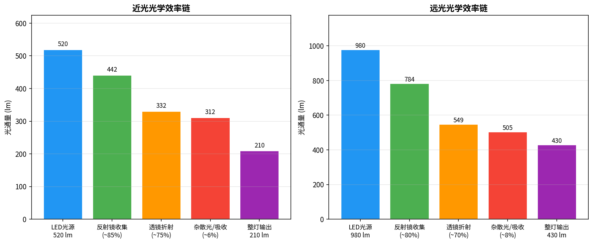

阅读前须知
本站所有数值均标注资料来源编号（S1~S7）。资料之间存在互相矛盾的记载（如 75R 限值、GB/T 31887.1-2019 的版本状态、电自是否允许远光），已逐条列在 第 10 节「资料口径与待核项」，本站不做静默统一。凡涉及认证判定的数值，请回查标准原文。
01
先记住三条结论
cd / lx / 距离平方反比
25 m · cd
摩托车走「机动车」路线，在灯前 25 m 测发光强度（坎德拉）。GB 19152-2025 6.1.7。
10 m · lx
电动自行车随整车走「非机动车」路线，在灯前 10 m 测照度（勒克斯）。GB/T 31887.1-2019。
E = I ÷ d²
两者是同一束光的两种说法。距离固定即可互换；10 m 与 25 m 的照度差 6.25 倍。
概念：光强 vs 照度 S1 / S2
光强（cd）是「光源朝某一方向发出的光有多猛」，属于灯自身属性，与距离无关。照度（lx）是「光打到某个面上，那个面有多亮」，随距离平方衰减。
标准要规定的其实是：在 10 m 或 25 m 那面墙上，哪里必须亮（下限）、哪里绝不能亮（上限）。
一句话记忆摩托车说 cd、测 25 m；电自说 lx、测 10 m。数值不能直接比较，先统一单位与距离。
交互式换算器 S1 / S2
该方向在该距离屏上的照度 E
—
—同一光强在 10 m 屏（I÷100）
—同一光强在 25 m 屏（I÷625）
—反推 10 m 体系光强（E×100）
—反推 25 m 体系光强（E×625）
举例（S2 第 56 页）：I = 10 000 cd → 10 m 处 100 lx、25 m 处 16 lx，比值 6.25。教程 Rev3.3 换算举例：摩托车 50V ≥5 100 cd 折合 25 m 屏约 8.2 lx；电自 A 点 ≥10 lx 折合约 1 000 cd。
02
配光屏与测试点命名
一面墙 · 一套坐标 · 一套命名规则
暗室中把灯放在测角仪支架上，正前方立一面测试屏；受光器沿屏幕逐点扫描。屏幕以 HV 为原点，建立 H-H（水平）与 V-V（垂直）坐标系。S1 / S2
点名里的数字是道路距离（米），不是角度 S2 第 10 页
由 0.75 m 安装高度反推：50 → 0.86°D（tan⁻¹ 0.75/50）、75 → 0.57°D、25 → 1.72°D。B50L＝左 3.43°、上 0.57°，正是对向 50 m 处驾驶员眼睛的位置。方位字母：U 上 / D 下 / R 右 / L 左（标准 6.1.8）。
照准是前提（GB 19152-2025 6.3.1）
非对称近光：截止线转角必须压在 V-V 线上，水平部分位于 H-H 线以下 0.57°（25 m 屏上约低 25 cm）。照准不准，后面所有 cd / lx 数值都作废。

原培训插图 · 配光测试点位置图（25 m 屏）：图中标注 1 区 ≤700 cd、Ⅲ 区 ≤625 cd、2 区 ≥1100 cd 等。注意该图混用了不同级别的点位坐标，属教学示意；点位角度与限值以标准表为准。S6

原培训插图 · 近光明暗截止线结构对比：左为对称近光（BS/CS/DS）水平平直截止线，右为非对称近光（C/V）右侧 15° 上扬的肘肩。S6
03
两条合规路径
机动车 CCC vs 随整车验收
核心差异 S1 / S2 / S4
| 维度 | 摩托车 / 电动摩托车 | 电动自行车 |
|---|
| 主标准 | GB 19152-2025 | GB/T 31887.1-2019（版本状态见第 10 节） |
| 认证路径 | 机动车 CCC：前照灯 GB 19152 + 光信号 GB 17510 + 安装 GB 18100 | 随整车 GB 17761 验收，灯具不单独 CCC |
| 测试距离 / 单位 | 25 m / cd | 10 m / lx |
| 防眩目（上限） | B50L ≤350 cd · Ⅲ区 ≤625 cd · BR ≤1 750 cd | H-H 及以上 < 2 lx |
| 照路（下限） | 75R ≥12 100 · 50R ≥10 100 · 50V ≥5 100 cd（C 级） | A 点 EA ≥10 lx；远光 HV ≥50 lx |
| 远光核心 | Imax 27 000 / 40 000 cd（整体 ≤215 000 cd），HV ≥0.8×Imax | HV ≥50 lx 单档 |
| 近光分级 | 对称 BS/CS/DS、非对称 C/V；远光 A/B 与次级 BS/CS/DS；ADB 仅 L3/L4/L5 | 不分级，按 A 点实测 EA 分档（EA ≤20 / >20 lx） |
| 换算 | lx = cd ÷ 625 | cd = lx × 100 |
电动自行车标准状态存在重要争议：标准体系 xlsx 记载 GB/T 31887.1-2019 已于 2026-05-01 废止、2025 版删除电自适用范围，但 GB 17761-2024 仍引用 2019 版；且该 xlsx「问题5」称电自禁止远光，而进阶培训 V6.7 第 9.3 节讲解电自远光表 4。两者已列入 待核项 C3 / C4。
标准体系逐维度对照 S4
摩托车有完整标准链，电自存在体系断裂
市场层面的系统性问题（S4「问题4」，观察性结论，B 级可信度）
配光标准引用已废止版本、安装标准错位、环境可靠性标准空白、反射器标准版本争议；车灯无独立 CCC、电商与改装市场大量无截止线裸 LED；产品层面存在光型不合格、色温乱标、功率虚标、防水虚标、安装随意。该表自评可信度 B 级（市场观察 / 电商调研），本站按定性结论引用，不作为判据。

原培训插图 · 近光各级别关键测试点限值对比：50V 下限、50L~50R 线下限、1 区/Ⅲ 区上限。BS 2200/1100/700，CS 2450/1100/700，DS 4900/2200/700，V 5100/1800/625，C 5100/2540/625（cd）。S6

原培训插图 · 远光各级别 Imax / HV 限值对比：A 级 27 000 / 8 000，B 级 40 000 / 8 000，BS 级 20 000 / 16 000（cd）。S6 注：该图 A/B 的 HV 取 8 000 cd，与进阶培训表 8「HV ≥0.8×Imax」不一致，见待核项 C5。
04
标准表格逐表速查
表 3 / 4 / 5 / 8 / 9 / 10~14 · 电自表 3 / 4
数值为培训资料对 GB 19152-2025 与 GB/T 31887.1-2019 的节选整理，完整要求以标准原文为准。S1 / S2 / S3
近光配光表
远光 · 表 8
0.8×Imax 为什么存在 S2 第 29 页Imax 可能落在偏心位置（例如某颗透镜焦点偏了）。HV 必须独立设下限，防止「边缘很亮、正前方反而黑」的空心光斑；中心与峰值差不得超过 20%。
ADB 自适应远光 · 表 9（仅 L3/L4/L5）
三条附加规则 S2 第 35 页中性状态（未检测到来车）须满足 5.7.4 远光要求；成对安装单侧 HV ≥16 200 cd；其余点取两侧平均值判定；近光参与且达标时 B 部分可免测。
电动自行车 · GB/T 31887.1（10 m 屏，lx）
电自信号灯要点 S2 第 55 页转向灯 1~2 Hz、占空比 45%~55%、光强 50~350 cd（不是 1.5~2.5 Hz）；制动灯 ≥40 cd 或 ≥5×后灯最大值（取高者）、≤185 cd；前/后位置灯持续发光或 1~4 Hz 闪光。
光通量与生产一致性
05
摩托车前照灯设计全流程
三阶段十五步 · 从立项到市场监督
节点标题与副标题逐字取自「设计全流程图」；点击任一节点查看工程说明与依据。S6 / S3

原培训插图 · 设计全流程图：设计阶段（需求分析 → LED 选型 → 光学设计 → 仿真验证 → 原型制作）、验证阶段（暗室测试 → 分布光度计 → 报告判定 → 稳定性验证 → 型式试验）、量产阶段（生产一致性 → 来料检验 → 在线配光 → 出厂检验 → 市场监督）。S6
样件实测数据 S3 / S6
数据取自全流程教程实测记录
区域光通量的旋转不变性 S3 第 7.2 节区域Ⅰ＝30L~30R / 1U~15D，区域Ⅱ＝30L~30R / 1U~3.5D（含于Ⅰ内）。绕光轴旋转不改变区域光通量，因此其判定与照准无关；IES 的 candela multiplier 偏差只影响绝对值，不影响角度分布占比。
06
测试设置与照准实操
25 m / cd / 照准 vs 10 m / lx / 直测
同一间暗室，两套摆法，一步摆错全部白测。S2 第 11 章
摩托车 · 25 m 场（先照准、后测点）
核心条款（GB 19152-2025 第 6 章）
| 条款 | 要求 |
|---|
| 6.1.7 | 测试距离为基准中心前 25 m |
| 6.1.9 | 基准中心与测角计旋转中心重合 |
| 6.3.1.1 | 水平：对称光形对 V-V／非对称转角在 V-V |
| 6.3.1.2 | 垂直：截止线水平部分在 H-H 下 0.57° |
| 6.3.2 | 远光：最大发光强度区域中心对 HV |
| 6.1.6 | 受光器有效测量面积 ≤65 mm 正方形 |
动手四步：布场 → 定位 → 近光照准 → 远光照准，顺序不能反。组合灯（远近光共用调光机构）远光必须在近光照准后的位置直接测量，不允许单独调整（6.2 条）。供电稳压，LED 测试电压 13.2 V（附录 H）；试验条件 23 ℃±5 ℃、湿度 ≤80%、一级照度计（6.1.3 / 6.1.5）。
电动自行车 · 10 m 场（摆正就能测）
核心条款（GB/T 31887.1-2019 第 5 章，依 S2 第 64 页整理）
| 项目 | 要求 |
|---|
| 测试距离 | 10 m，标准直接规定，无需换算 |
| 灯具安装 | 固定在支架上，光轴水平，灯具中心与 HV 同高 |
| 照准 | 无强制截止线照准；以光轴与屏幕交点为 HV |
| 坐标系 | H-H 为水平轴、V-V 为垂直轴，直接读 lux |
| 限值 | 直接以 lx 给出（EA ≥10、HV ≥50 lx） |
动手三步：布场 → 装灯 → 测量，不调灯、不复位、一次测完。口诀：「摆正就能测」 —— 无照准、无下倾、直接读 lux。H-H 未在安装说明中定义时二选一：以上照度 ≤2 lx 的线，或 Emax 所在线之上 3.5° 的线。
开测前 10 秒自检清单 S2 第 68 页
摩托车：距离 25 m □ 基准中心重合 □ 水平对 V-V □ 垂直压 0.57° □ 远光 Imax 对 HV □ 稳压供电 □
电自：10 m 屏 □ 光轴水平且与 HV 同高 □ 逐点直读 lux □ 免照准不下倾 □ 按标称电压供电 □ 暗室无杂散光 □
07
稳定性 · 生产一致性 · 研发内控
附录 C / D / E · 表 10~14 · 1.3× / 0.8×
附录 C / D / E 判据 S2 第 38~40 页
| 项目 | 判据 |
|---|
| 附录 C 稳定判据 | 15 min 内变化 <3%，或 5 min 内 <1% |
| 双状态 | 点亮 1 min 与热稳定态两状态均须达标 |
| 附录 D · 12 h 后 | B50L ≤170 cd；1.5L/R-0.50U ≤255 cd；其余测试点 ≤10% |
| 附录 D 截止线漂移 | 3 min vs 60 min：上偏 ≤1.0 mrad、下偏 ≤2.0 mrad |
| 附录 E 耐候性 | 5500~6000 K 黑体、1200 W/m²±200、4500 MJ/m²±200；试后透过率变化 ≤0.020 |
| 附录 K 机械磨损后 | 非对称近光 B50L ≤最大值 130%、75R ≥最小值 90%；单远光 HV ≥最小值 90% |
| 生产一致性 | 下限 ×0.8；上限按表 10~14 显式值，不能一律 ×1.2 |
研发内控余量计算器 S2 §8.1 / §12.3
1.3× / 0.8× 是资料给出的行业常用内控经验值，用于覆盖透镜公差、灯珠批次差异与热态光衰。它不是标准条文，是研发设计目标。

原培训插图 · 附录 C/D 稳定性测试时间线：点亮 → 1 分钟判定 → 持续点亮 → 热稳定（<3%/15 min）→ 稳定态判定 → 12 小时耐久 → B50L ≤170 cd / 截止线漂移 → 判定完成。S6

原培训插图 · 近光 / 远光光学效率链：近光 520 → 442 → 332 → 312 → 210 lm；远光 980 → 784 → 549 → 505 → 430 lm。括号百分比为各环节保留率。S6
开模前六项 Checklist S2 第 48 页
① 配光：75R / B50L / HV / Imax 四点全核，余量 ≥1.3× / ≤0.8× ② 截止线：清晰度 + 转角对准 V-V，偏移 <1.0 mrad ③ 热态：稳定态衰减仿真 ≤余量，散热路径确认 ④ 材料：塑料透镜耐候 / 耐化学 / 附着力按附录 E ⑤ 电控：供电稳压、ADB 分区响应与标定 ⑥ 一致性：量产工艺公差 → 配光容差预算。
六个常见误区 S2 第 49 页
只看下限不看上限 · 瓦数＝亮度 · 冷态合格就交差 · 截止线「差不多就行」 · 拿电自数值套摩托车 · 忽略生产一致性。
08
常见坑与案例复盘
实测 → 回流校准仿真 → 回归优化
前两例取自进阶培训 V6.7 §12.6，后四例取自《摩托车前照灯设计全流程教程》第十一章；均为资料记录的真实或典型翻车。S2 / S3
复盘方法论 S2 §8.4 / §12.6仿真 → 打样 → 实测 → 回归，四步闭环；实测数据必须回流校准仿真模型。两个认证翻车案例都输在「余量没留够」：一个仿真只留 1.05×，一个没有按 0.8× 控防眩上限。
09
十二道自测题
答不上来就回头翻对应章节
题目与解析逐字取自进阶培训 V6.7 第 59~60 页。选择后立即显示答案与解析。S2
已完成 0 / 12 · 答对 0 题
10
资料口径与待核项
矛盾不抹平 · 来源可追溯
直谏
培训资料并非自洽。以下 6 项是我在逐份读取后发现的互相矛盾记载，网站按「采用哪份 + 保留哪份」明写处理，没有替资料做静默统一。涉及产品定义、认证申报或对外承诺时，请回查标准原文与检测机构意见。
资料来源清单 S1~S7
全部文件位于工作区「培训」目录（S7 为视觉规范）
未纳入本站的内容
「签到表.pdf」为 2026-08-18「二轮车灯入门基础培训」手写签到扫描件，含姓名与工号等个人信息，不纳入公开页面；「关于二轮车车灯相关的一些问题.md」仅列出 5 个待答问题、无答案，本站只引用其题目所指向的标准体系 xlsx 结论；能力展示 PPT 项目（design.md / outline.md）仅用于视觉规范，未作为技术数值来源。
免责与适用范围
本站是培训资料的通俗解读与可视化整理，覆盖摩托车（含轻便摩托车 L1~L5）与电动自行车前照灯。所有示意图为教学示意、非按比例。数值为 GB 19152-2025 表 3/4/5/8/9、附录 C/D/E、表 10~14 与 GB/T 31887.1-2019 表 3/4 的节选。不替代标准原文，认证判定以标准原文及检测机构意见为准。